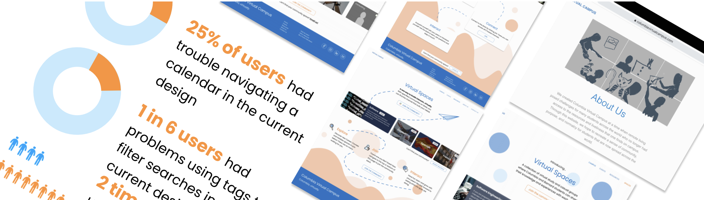

Columbia Virtual Campus
UX Designer
August 2020
Columbia Virtual Campus was designed to serve the Columbia Community during the COVID-19 pandemic by offering
virtual events and resources to students who found themselves in no circumstances.
One task presented was to create a new page for the Columbia Virtual Campus Website. We took a traditional design
approach and ideated, iterated and got feedback on prototypes before pushing a final design to the developer team.
The design team was tasked to conduct user testing comparing the old version of the site with a new version
containing a visual update.
The team wanted to obtain both qualitative and quantitative feeback from users we tested to better understand
the problem areas on the site.
This method of user testing allowed us to visually qualify data based on how users interacted with it. It proved to be
useful in summarizing data and identifying problem areas that most users struggled with. This method was
effective and gave useful qualitative and quantitative infromation about how our designs were interacted with.
Our findings showed large sticking points on different ppages of the current site, and also showed some
aspects to be improved on the redesign.